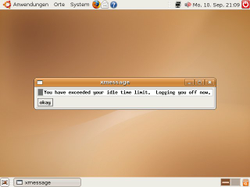

timeoutd
Archivierte Anleitung
Dieser Artikel wurde archiviert, da er - oder Teile daraus - nur noch unter einer älteren Ubuntu-Version nutzbar ist. Diese Anleitung wird vom Wiki-Team weder auf Richtigkeit überprüft noch anderweitig gepflegt. Zusätzlich wurde der Artikel für weitere Änderungen gesperrt.
Zum Verständnis dieses Artikels sind folgende Seiten hilfreich:
timeoutd ist ein Dienst, der Benutzer nach einer bestimmten Zeit der Aktivität bzw. Inaktivität automatisch ausloggen kann. So ist es möglich, die Länge einer Sitzung eines Benutzers oder die maximale Länge aller Sitzungen des Benutzers pro Tag zu limitieren. Oder auch die Zeit festlegen, nach der der Benutzer bei Inaktivität automatisch abgemeldet. Ebenso kann man Zeiten definieren, an denen Benutzer nicht angemeldet sein dürfen.
Hierbei ist es egal, ob der Benutzer in einer Desktopumgebung angemeldet ist, ob er eine virtuelle Konsole nutzt oder sich gar per SSH auf dem Rechner eingeloggt hat. Zusätzlich kann es Benutzern auch verboten werden, sich überhaupt erst anzumelden.
Mit timeoutd lassen sich also effektiv Zugangsbedingungen zum Rechner definieren. Es wäre denkbar, beispielsweise den Zugang für Kinder auf eine definierte Anzahl von Stunden pro Tag zu begrenzen und nach einer bestimmten Uhrzeit eine Anmeldung unmöglich zu machen.

Installation¶
Der Dienst ist bis Ubuntu 11.04 in den Paketquellen von Ubuntu verfügbar. Es muss nur das folgende Paket installiert [1] werden:
timeoutd (universe)
 mit apturl
mit apturl
Paketliste zum Kopieren:
sudo apt-get install timeoutd
sudo aptitude install timeoutd
Konfiguration¶
Nach der Installation muss timeoutd konfiguriert werden. Dies geschieht über die Datei /etc/timeouts, die mit Root-Rechten [3] bearbeitet werden kann. Hier müssen Regeln hinzugefügt werden. Eine Regel besteht aus einer Zeile in der Art
Gültigkeit:TTYS:User:Gruppe:Inaktivität:Sitzungsdauer:Gesamtsitzungsdauer:Warnung
bzw.
Gültigkeit:TTYS:User:Gruppe:NOLOGIN
wobei folgende Definitionen gelten.
| Optionswerte für eine Regel des timeoutd | ||
| Option | Allgemein | Erklärung |
Gültigkeit | DD[DD...][SSSS-EEEE] | DD steht für die Tage an denen die Regel aktiv sein soll. Möglich sind Mo, Tu, We, Th, Fr, Sa, Su, Wk und Al. Wk steht für Werktage, Al für die ganze Woche. SSSS sowie WWWW für die Uhrzeit, in der die Regel aktiv sein soll. Die Zeit wird im 24h Format angegeben. |
TTYS | ttyS* | Hier kann der Zugang pro Terminal reglementiert werden. In Zeiten, in denen Rechner nur mehr selten über Terminalrechner bedient werden, sollte man hier einfach nur "*" eintragen. |
User | otto,paul,anna | Kommagetrennte Liste der Benutzer, die die Regel betreffen soll. |
Gruppe | schueler,kinder | Kommagetrennte Liste der Gruppen, die die Regel betreffen soll. |
Inaktivität | <zeit in min> | Zeit bei Inakativität, bis der Benutzer ausgeloggt wird. |
Sitzungsdauer | <zeit in min> | Zeit, die eine Sitzung maximal dauern darf. |
Gesamtsitzungsdauer | <zeit in min> | Zeit, die ein Benutzer maximal am Tag eingeloggt sein darf. |
Warnung | <zeit in min> | Blendet eine Warnung ein, die dem Benutzer mitteilt, dass seine Sitzung in X Minuten beendet wird. |
Ein Spezialfall ist die Option NOLOGIN. Hier werden keine weiteren Angaben mehr zur Sitzungsdauer usw. gemacht. NOLOGIN definiert eine Zeit, an der die betroffenen Benutzer/Gruppen nicht mehr angemeldet sein bzw. sich auch nicht mehr anmelden dürfen. Bestehende Sitzungen werden beendet und falls sich ein Benutzer neu anmeldet, so wird die Sitzung umgehend wieder geschlossen.
Wenn diese Option für Benutzer/Gruppen genutzt werden soll, es für diese aber noch eine weitere Regel geben soll, so muss diese nach den Zeilen mit NOLOGIN stehen (s. Beispiel 4).
Hinweis:
Unter Ubuntu 11.04 verhält sich timeoutd etwas anders, wenn man versucht, sich in den mit der Option NOLOGIN gekennzeichneten Zeiten anzumelden. Die Anmeldung wird nicht sofort verhindert, sondern es ist ein Login möglich. Der Benutzer wird erst nach 30-60 Sekunden darauf hingewiesen, dass er sich nicht anmelden darf und dann automatisch abgemeldet.
Damit eine neue Regel aktiv wird, darf man nicht vergessen, den Dienst die Konfiguration neu einlesen zu lassen. Informationen hierzu findet man weiter unten bei Steuerung.
Beispiele¶
Im folgenden sollen ein paar Beispiele den Einsatz von timeoutd erklären.
# Beispiel 1: Otto darf insgesamt nicht mehr als 180 Minuten am Tag angemeldet sein # fünf Minuten vor Ende dieser Zeit wird er gewarnt. Die Beschränkung gilt jeden Tag. Al:*:otto:*:*:*:180:5 # Beispiel 2: Alle Mitglieder der Gruppe "user" werden automatisch nach 15 Minuten # Inaktivität abgemeldet. Al:*:*:user:15:*:*:* # Beispiel 3: Alle Mitglieder der Gruppe "kinder" dürfen sich Werktags nach 22 # Uhr nicht mehr anmelden. Am Freitag und Samstag bis 24 Uhr. Bestehende # Sitzungen werden um 22 bzw. 23:59 Uhr beendet. Wk2200-0700:*:*:kinder:NOLOGIN FrSa2359-0700:*:*:kinder:NOLOGIN # Beispiel 4: Benutzer Fred darf sich Werktags und am Wochenende vor 14 Uhr und # nach 20 Uhr nicht mehr anmelden. # Zu den anderen Zeiten darf er maximal 2 Stunden pro Tag angemeldet sein. Wk2000-1400:*:fred:*:NOLOGIN FrSa2000-1400:*:*:kinder:NOLOGIN Al:*:fred:*:*:*:120:10
Dienst steuern¶
Wie alle anderen Dienste bringt timeoutd Start/Stop-Skripte mit. Diese Skripte lassen sich natürlich auch zum Kontrollieren des Dienstes gebrauchen. In einem Terminal [2] muss dazu folgendes eingegeben werden:
sudo /etc/init.d/timeoutd
Beispiele:
"start" - Startet den Dienst
"stop" - Stoppt den Dienst
"restart" - Startet den Dienst neu
"reload" bzw. "force-reload" - Liest die Konfigurationsdateien neu ein
- Erstellt mit Inyoka
-
 2004 – 2017 ubuntuusers.de • Einige Rechte vorbehalten
2004 – 2017 ubuntuusers.de • Einige Rechte vorbehalten
Lizenz • Kontakt • Datenschutz • Impressum • Serverstatus -
Serverhousing gespendet von